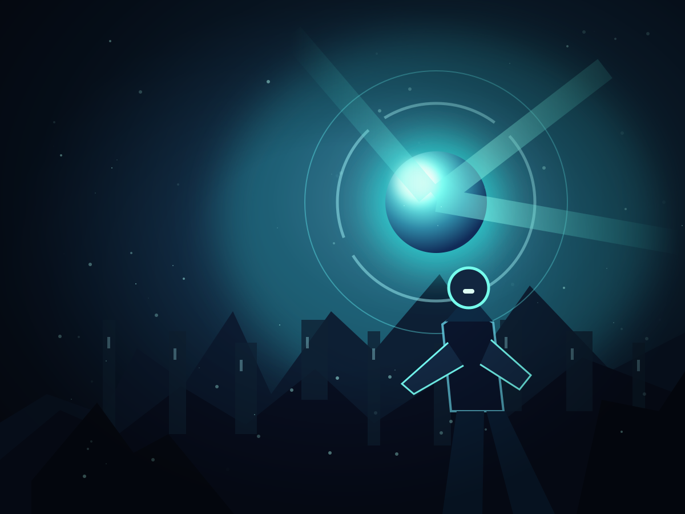

OPTICAL MATERIALS LAB 01 / REFRACTION
让光，
真正弯曲。
不是给背景加一层模糊。使用 Skill 内置的光学引擎，观察图像像素经过弧面玻璃时的偏移与色散。
01 · LIVE PREVIEW
引擎检测中…正在渲染的玻璃

SHUGE ARCADEGLASS ENGINE · EXPERIMENT 01
液态玻璃
光会改变方向。
按住这块面板，左右拖动试试。
▶ LUMEN SIEGE拖动玻璃，观察下方光环如何弯曲
02 · MATERIAL
L2 · Optical对比三种材质
SVG 位移映射改变玻璃下方的实际像素采样；边缘弯曲，中间保持清晰。